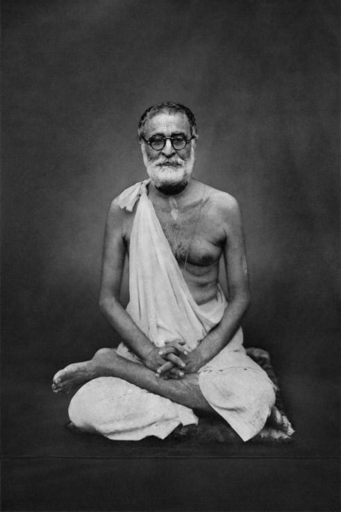

Selected Quotes Of HDG Bhaktisiddhanta Saraswati Thakur Prabhupada Part 1
Posted on : 18th february, 2025

1. Sri Krsna, the visaya-vigraha, is the sole enjoyer, and all others are to be enjoyed by him. {Letter 19 june 1935, patravali 3.58}
2. All our works must be dovetailed and adjusted with the gratification of Krsna's senses. {Gaudia 17.562.}
3. In vaishnava judgement, whatever activity is not for Krsna's service and pleasure is most contemptible, no matter how praiseworthy it may be according to worldly vision. {Amulya-vani 8}
4. Rupanuga devotees do not place faith in their own abilities but give all credit to the source of all power. {letter 25 November 1935, patravali 3.89}
5. If we desire to follow an auspicious course on life, then disregarding the theories of even countless people, we should hear the vedic instructions. {Lecture 22 Asadha 1333, SPU 392}
6. We are not doers of good or bad deeds, nor are we scholars or ignoramuses. Carrying the shoes of the pure devotees of hari as our shelter and protectant, we are initiates into the mantra kirtanyah sada harih. {Letter Nov 3 1931. Patravali 2.104}
7. Inclination to kirtana effects sravana and the opportunity for smarana. At that time there is the possibility of serving within Krsna's Asta-kaliya-lila. In all respects pray to Sri Nama for his mercy [Amulya-vani 8}
8. Pray with your heart to sri Harinama Prabhu for the eligibility to serve him. Nama Prabhu, who is Nami Prabhu, will shine in your heart. {Amulya-vani 9}
9. Service to Krsna, Service to Krsna's devotees, and sri nama kirtana, although diffrent undertakings, are the same in essence. By nama sankirtan service to Krsna and his devotees is performed. By vaishnava Seva, Krsna-Kirtana and Krsna-seva is performed. By Krsna-seva Nam-sankirtan and vaishnava-seva are performed. By reciting Caitanya-Caritamrita, Krsna-seva and nama-sankirtana are performed. By Reciting Srimad Bhagvatam in the association of devotees, the same results are achieved. By Arcana, these three are also effected. And by nama bhajana they are excellently performed. {Srila Prabhupader Upadesamrita 402}
10. If Sri-Krsna-Sankirtana is not performed, then no other limb of bhakti, such as mathura vasa and sadhu sangha, can be fulfilled. But if only Sri Krsna-sankirtana is performed, then the results of mathura-vasa,of sadhu sanga, of faithfully serving deties, and of hearing srimad bhagvatam are all fulfilled. Nama Bhajana completely fulfils the jiva's every need. {Amulya-vani 8}
Srila Bhaktisiddhanta Saraswati thakur Prabhupad ki Jay!
HDG A.C Bhaktivedanta swami srila Prabhupada ki Jay!